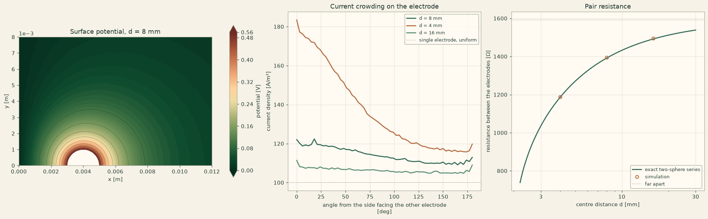
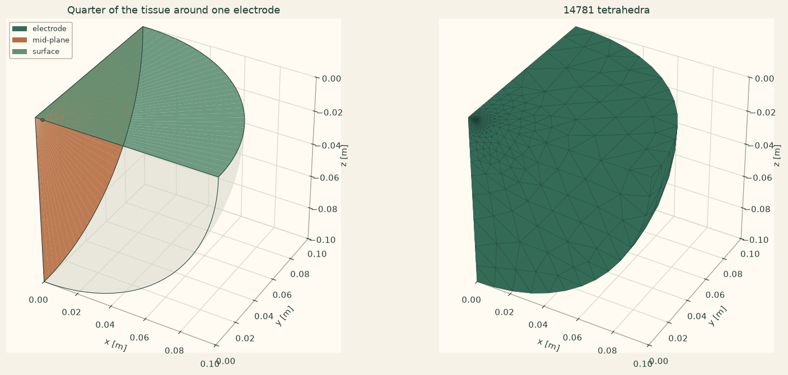

Docs › Examples › Pacemaker electrodes: current distribution and pair resistance
Electric currents · 3D
Pacemaker electrodes: current distribution and pair resistance
Two hemispherical pacing electrodes on heart tissue drive an ionic current; the resistance between them and the crowding of the current on their facing sides.
Run locally with OneSimulation. The example downloads are free. Running them requires an activated runtime. OneSimulation 1.0 · CPython 3.13 on macOS (Apple Silicon), Ubuntu 22.04 (x86-64), and Windows x64. Installation and activation · View pilot plans. Scope of the reference checks.


What it computes
OneSimulation solves the steady current conduction in a quarter of the tissue read from STEP for three electrode distances, using the symmetry plane through both electrodes and the antisymmetric mid-plane, with quadratic elements on graded tetrahedra; the current is the reaction on the electrode. The script that builds the STEP files comes with the notebook.
What it checks
The pair resistance converges to the exact two-sphere series (1392.2 Ohm at 8 mm) with observed order 3.2, the extrapolation lies 0.06 % above it, and on the finest meshes the 4, 8 and 16 mm distances deviate by +0.17, +0.14 and +0.15 %; far apart the pair tends to 1591.5 Ohm, and at 4 mm the facing side carries 1.6 times the far-side current density.
Geometry
The notebook starts at the import of the CAD files pacing_electrode_pair_resistance.step, pacing_electrode_pair_resistance_16mm.step, pacing_electrode_pair_resistance_4mm.step: STEP (AP242), readable by any CAD program, with the names of the faces that the boundary conditions use. Put them next to the notebook.


The geometry script
The script pacing_electrode_pair_resistance_geometry.py builds the geometry with the CAD objects of OneSimulation and writes the files. Change a dimension there, run it, and run the notebook again.
"""Geometry of the OneSimulation example "Pacemaker electrodes: current distribution and pair resistance".
Builds one quarter of the tissue below the surface on which two hemispherical electrodes (radius
1 mm) sit, with the CAD objects of OneSimulation: a quarter of a half ball of 100 mm radius, cut by
the mid-plane between the electrodes (face group midplane) and by the plane through both electrode
centres (symmetry); the tissue surface is surface, the far boundary outer and the electrode
electrode. One file per centre distance: pacing_electrode_pair_resistance.step (8 mm) and
pacing_electrode_pair_resistance_4mm.step, ..._16mm.step.
"""
from onesim.cad.d3 import Box, Sphere
electrode, tissue = 1.0e-3, 0.1
quarter = Box(
length=tissue, width=tissue, height=tissue, origin=(0.0, 0.0, -tissue)
).named("cut")
for distance in (0.004, 0.008, 0.016):
region = (Sphere(radius=tissue).named("far") & quarter) - Sphere(
radius=electrode, origin=(distance / 2, 0.0, 0.0)
).named("tip")
faces = region.boundaries
region = region.grouped(
electrode=region.select(faces=lambda face: face.id.startswith("tip")),
midplane=faces["cut.x_min"],
symmetry=faces["cut.y_min"],
surface=faces["cut.z_max"],
outer=region.select(faces=lambda face: face.id.startswith("far")),
)
region.save(
"pacing_electrode_pair_resistance.step"
if distance == 0.008
else f"pacing_electrode_pair_resistance_{round(1e3 * distance)}mm.step"
)The notebook
The complete notebook, cell by cell. Run it to produce the figures and the comparison printout.
A bipolar pacing lead stimulates the heart through two electrodes in contact with the tissue. The pacing voltage drives an ionic current through the tissue (conductivity \(\sigma=0.2\) S/m); the resistance between the electrodes sets the current, and with it the battery drain and the stimulation threshold. The electrodes are modelled as two hemispheres of radius \(a=1\) mm on the insulating surface of a half-space of tissue, at the centre distance \(d\). The potential obeys
the same equation as electrostatics with the conductivity in place of the permittivity; the "charge" on an electrode becomes the current through it.
The pair is symmetric about the plane through both centres and antisymmetric about the mid-plane between them, where the potential is zero. One quarter of the tissue, a quarter of a half ball of radius 100 mm, comes from the CAD file pacing_electrode_pair_resistance.step (\(d=8\) mm) and from ..._4mm.step and ..._16mm.step. The script pacing_electrode_pair_resistance_geometry.py builds them with the CAD objects of OneSimulation.
| face | condition |
|---|---|
electrode | \(V=U/2\), half the pacing voltage \(U=1\) V |
midplane | \(V=0\) (antisymmetry) |
symmetry, surface | no current, \(\mathbf J\cdot\mathbf n=0\) |
outer | no current (far away) |
Reference. Two hemispheres on an insulating half-space carry half the current of two whole spheres in an unbounded medium. The two-sphere problem is solved exactly in bispherical coordinates (Smythe, Static and Dynamic Electricity, 3rd ed., Sec. 5.08); with \(\cosh\beta=d/(2a)\) the resistance between the hemispheres is
which tends to \(2/(2\pi\sigma a)\), two single electrodes in series, when they are far apart.
import numpy as np
from onesim.cad.exchange import load
from onesim.meshing import TetrahedralMesher
from onesim.numerics import Numerics
from onesim.numerics.fem import FiniteElement, Lagrange
from onesim.numerics.linear import SparseDirect
from onesim.physics.electrostatics import (
FixedPotential,
PoissonEquation,
ZeroNormalElectricDisplacement,
)
from onesim.results.comparisons import convergence
from onesim.simulation import Problem, Simulation, regionwise
from onesim.visualization import plots, theme
theme.set()Geometry and mesh
load returns the quarter of the tissue with its named faces. The tetrahedra grow from the electrode outwards; the distance of 8 mm is meshed three times, from 0.2 to 0.1 mm at the electrode.
tissues = {
0.004: load("pacing_electrode_pair_resistance_4mm.step"),
0.008: load("pacing_electrode_pair_resistance.step"),
0.016: load("pacing_electrode_pair_resistance_16mm.step"),
}
radius = 1.0e-3
cases = [
(0.008, 0.20e-3),
(0.008, 0.14e-3),
(0.008, 0.10e-3),
(0.004, 0.10e-3),
(0.016, 0.10e-3),
]
meshes = [
TetrahedralMesher(
target_size=0.02,
minimum_size=size,
size_field=lambda points, d=d, h=size: np.clip(
h + 0.3 * (np.linalg.norm(points - (d / 2, 0.0, 0.0), axis=1) - radius),
h,
0.02,
),
).generate(tissues[d])
for d, size in cases
]
faces = tissues[0.008].boundaries
view = plots.Camera(elevation=35, azimuth=-60)
fig = plots.figure(1, 2, size=(14, 6))
plots.geometry(
tissues[0.008],
selection={
"electrode": faces.electrode,
"mid-plane": faces.midplane,
"surface": faces.surface,
},
labels=False,
camera=view,
title="Quarter of the tissue around one electrode",
ax=fig[0],
)
plots.mesh(
meshes[1],
groups=("all",),
legend=False,
camera=view,
title=f"{meshes[1].cell_count} tetrahedra",
ax=fig[1],
)
plots.show()Model
The conductivity takes the place of the permittivity; the current leaving the electrode is the reaction of its fixed potential. The quarter holds half of one electrode.
conductivity, voltage = 0.2, 1.0
numerics = Numerics(
spatial=FiniteElement(element=Lagrange(order=2)), linear_solver=SparseDirect()
)
models = [
PoissonEquation(
domain=tissues[d].volume,
permittivity=regionwise((), default=conductivity, unit="S/m"),
charge_density=0.0,
)
for d, _ in cases
]
results = [
Simulation(
problem=Problem(
name="Pacing electrodes",
geometry=tissues[d],
physics=(model,),
boundary_conditions=(
FixedPotential(
boundary=tissues[d].boundaries.electrode,
physics=model,
value=voltage / 2,
),
FixedPotential(
boundary=tissues[d].boundaries.midplane, physics=model, value=0.0
),
ZeroNormalElectricDisplacement(
boundary=tissues[d].boundaries.symmetry
| tissues[d].boundaries.surface
| tissues[d].boundaries.outer,
physics=model,
),
),
),
mesh=mesh,
numerics=numerics,
).solve_stationary()
for model, mesh, (d, _) in zip(models, meshes, cases)
]Results
The resistance \(R=U/I\) with the current \(I\) of the whole electrode, against the exact two-sphere series, for three meshes at 8 mm and for the three distances.
beta = lambda d: np.arccosh(d / (2 * radius))
exact = lambda d: 1 / (
np.pi
* conductivity
* radius
* np.sinh(beta(d))
* np.sum(1 / np.sinh(np.arange(1, 150) * beta(d)))
)
resistances = [
voltage
/ (2 * result.field(model.potential).reaction(tissues[d].boundaries.electrode))
for model, result, (d, _) in zip(models, results, cases)
]
print("distance cell size tetrahedra R [Ω] exact [Ω] deviation")
for (d, size), mesh, value in zip(cases, meshes, resistances):
print(
f"{1e3 * d:5.0f} mm {1e3 * size:8.2f} mm {mesh.cell_count:12d} {value:12.3f} {exact(d):12.3f} {100 * (value / exact(d) - 1):+10.3f} %"
)
study = convergence(resistances[:3], [size for _, size in cases[:3]])
print(
f"8 mm: observed order {study.order:.2f}, extrapolated {study.extrapolated:.3f} Ω ({100 * (study.extrapolated / exact(0.008) - 1):+.3f} %)"
)
print(
f"two single electrodes in series, 2/(2 pi sigma a) = {2 / (2 * np.pi * conductivity * radius):.3f} Ω"
)Figure
The potential on the tissue surface, the current density on the electrode surface around its equator (from the side facing the other electrode to the far side) for the three distances, and the resistance against the distance.
angle = np.linspace(0.0, np.pi, 61)
equator = lambda d: np.column_stack(
(
d / 2 - 1.001 * radius * np.cos(angle),
1.001 * radius * np.sin(angle),
np.full_like(angle, -1e-6),
)
)
crowding = {
f"d = {1e3 * d:.0f} mm": conductivity
* np.linalg.norm(result.field(model.electric_field).evaluate(equator(d)), axis=1)
for model, result, (d, size) in zip(models, results, cases)
if size == 0.10e-3
}
distances = np.geomspace(2.2e-3, 0.03, 200)
fig = plots.figure(1, 3, size=(18, 5.5))
plots.surface(
results[2].field(models[2].potential),
boundary=tissues[0.008].boundaries.surface,
limits=(0, 0.5),
contours=11,
subdivisions=2,
label="potential [V]",
xlimits=(0, 0.012),
ylimits=(0, 0.008),
title="Surface potential, d = 8 mm",
ax=fig[0],
)
plots.line(
np.degrees(angle),
crowding,
hlines={"single electrode, uniform": conductivity * voltage / (2 * radius)},
xlabel="angle from the side facing the other electrode [deg]",
ylabel="current density [A/m²]",
title="Current crowding on the electrode",
ax=fig[1],
)
plots.line(
1e3 * distances,
{"exact two-sphere series": [exact(d) for d in distances]},
points={
"simulation": (
[1e3 * d for d, size in cases if size == 0.10e-3],
[r for r, (d, size) in zip(resistances, cases) if size == 0.10e-3],
)
},
hlines={"far apart": 2 / (2 * np.pi * conductivity * radius)},
scale="logx",
xlabel="centre distance d [mm]",
ylabel="resistance between the electrodes [Ω]",
title="Pair resistance",
ax=fig[2],
)
plots.show()Going further
Change the electrode radius in pacing_electrode_pair_resistance_geometry.py to see the resistance fall roughly with \(1/a\); replace one hemisphere by a ring electrode on an insulating lead body; or add a thin layer of fibrous tissue of lower conductivity around the tip, which raises the pacing impedance over the weeks after implantation.